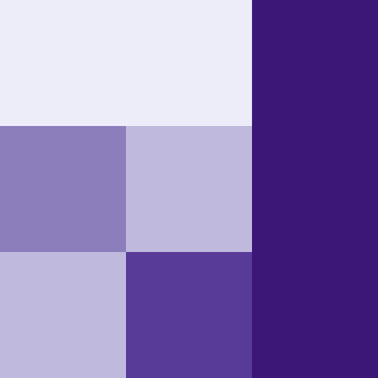

vignettes/wecoma.Rmd
wecoma.RmdThis vignette explains what a weighted co-occurrence matrix (wecoma) representation is and how to calculate it using the comat package. If you do not know what a co-occurrence matrix is, it could be worth to read the first package vignette first. The examples below assume the comat package is attached, and the raster_x and raster_w datasets are loaded:
The raster_x object is a matrix with three rows and columns with values of 1, 2, and 3.
raster_x #> [,1] [,2] [,3] #> [1,] 1 1 3 #> [2,] 1 3 3 #> [3,] 2 2 3
We can imagine that the value of 1 (blueish color) represents population A, the value of 2 (dark green) is population B, and the value of 3 (light green) represents population C.
The raster_w object is also a matrix of the same dimensions. It has values between 2 and 9.
raster_w #> [,1] [,2] [,3] #> [1,] 2 2 9 #> [2,] 6 4 9 #> [3,] 4 8 9
This object is different from the first one, as it does not represent categories. Its role is to provide some weights to the previous raster. We can think of it as a number of occurrences in each population.

The weighted co-occurrence matrix (wecoma) representation is a modification of the co-occurrence matrix (coma). In the co-occurrence matrix, each adjacency contributes to the output with the constant value 1. In the weighted co-occurrence matrix, on the other hand, each adjacency contributes to the output based on the values from the weight matrix. The contributed value is calculated as the average of the weights in the two adjacent cells.
We can use the get_wecoma() function to calculate this weighted co-occurrence matrix (wecoma) representation:
get_wecoma(raster_x, raster_w) #> 1 2 3 #> 1 12.0 5.0 13.5 #> 2 5.0 12.0 14.5 #> 3 13.5 14.5 49.0
In this representation, we do not count the neighbors but sum the contributed values from the weight matrix. The smallest value (5) represents the relation between the adjacent cells between the first and the second category. This is due to the relatively small values of the neighborhooding cells of these classes, but also because there is only one case of adjacent cells of these classes. Central left cell (blueish, category 1) has a value of 6, and the bottom left cell (dark green, category 2) has a value of 4. The output value, 5, is an average of the two adjacent weights. On the other hand, a light green region has the largest values in the weight matrix. Therefore, the output of the get_wecoma() function has the largest value (49) for the relation between the adjacent cells of the third category.
This function allows for some parametrization using additional arguments - fun and na_action. The fun argument selects the function to calculate values from adjacent cells to contribute to the output matrix. It has three possible options: "mean" - calculate average values from adjacent cells of the weight matrix, "geometric_mean" - calculate geometric mean values from adjacent cells of the weight matrix, or "focal" assign a value from the focal cell. The na_action argument decides on how to behave in the presence of missing values in the weight matrix. The default, "replace", replaces missing values with 0, "omit" does not use cells with missing values, and "keep" keeps missing values.
get_wecoma(raster_x, raster_w, fun = "focal", na_action = "omit") #> 1 2 3 #> 1 12 6 10 #> 2 4 12 16 #> 3 17 13 49
Similarly to the co-occurrence matrix (coma), it is possible to convert wecoma to its 1D representation. This new form is called a weighted co-occurrence vector (wecove), and can be created using the get_wecove() function, which accepts an output of get_wecoma():
my_wecoma = get_wecoma(raster_x, raster_w) get_wecove(my_wecoma, normalization = "pdf") #> [,1] [,2] [,3] [,4] [,5] [,6] [,7] #> [1,] 0.08633094 0.03597122 0.0971223 0.03597122 0.08633094 0.1043165 0.0971223 #> [,8] [,9] #> [1,] 0.1043165 0.352518
You can see the weighted co-occurrence matrix (wecoma) concept, there described as an exposure matrix, in action in the vignettes of the raceland package (Nowosad, Dmowska, and Stepinski, 2020):